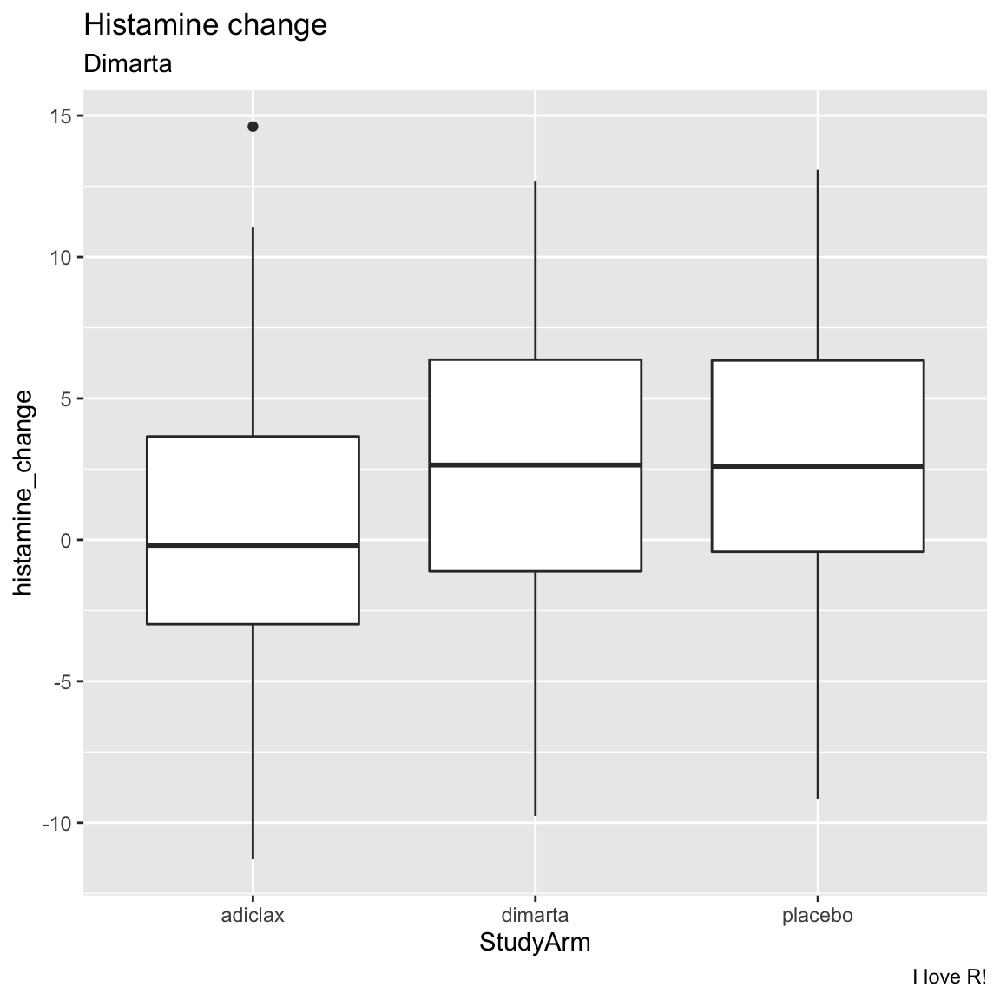
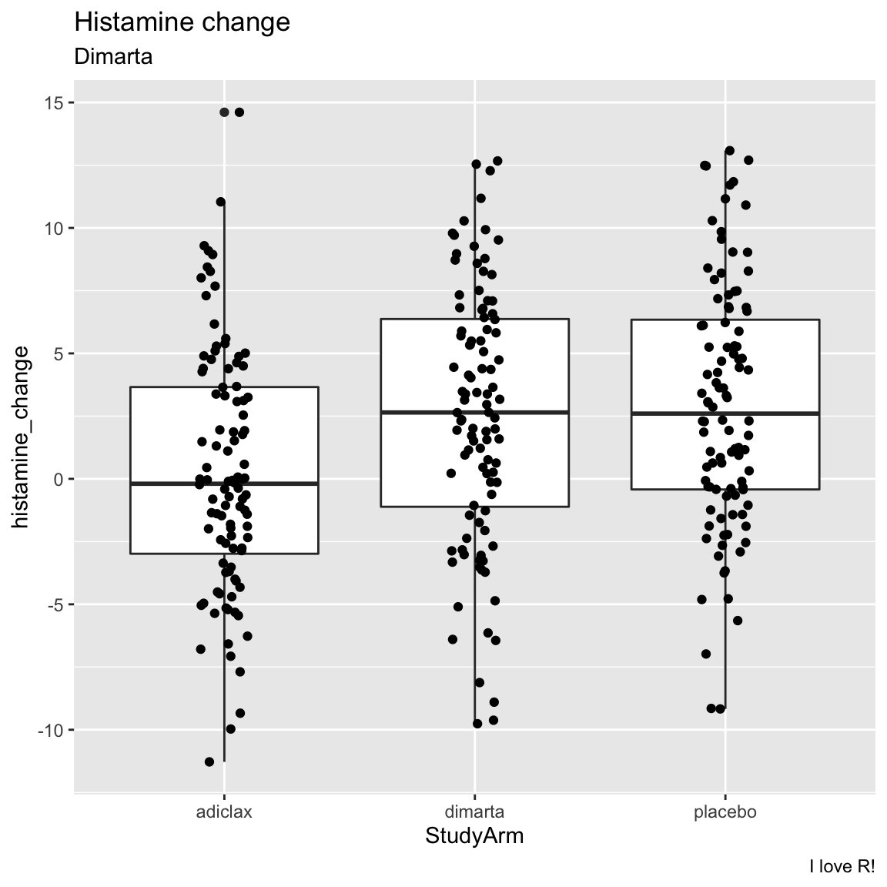
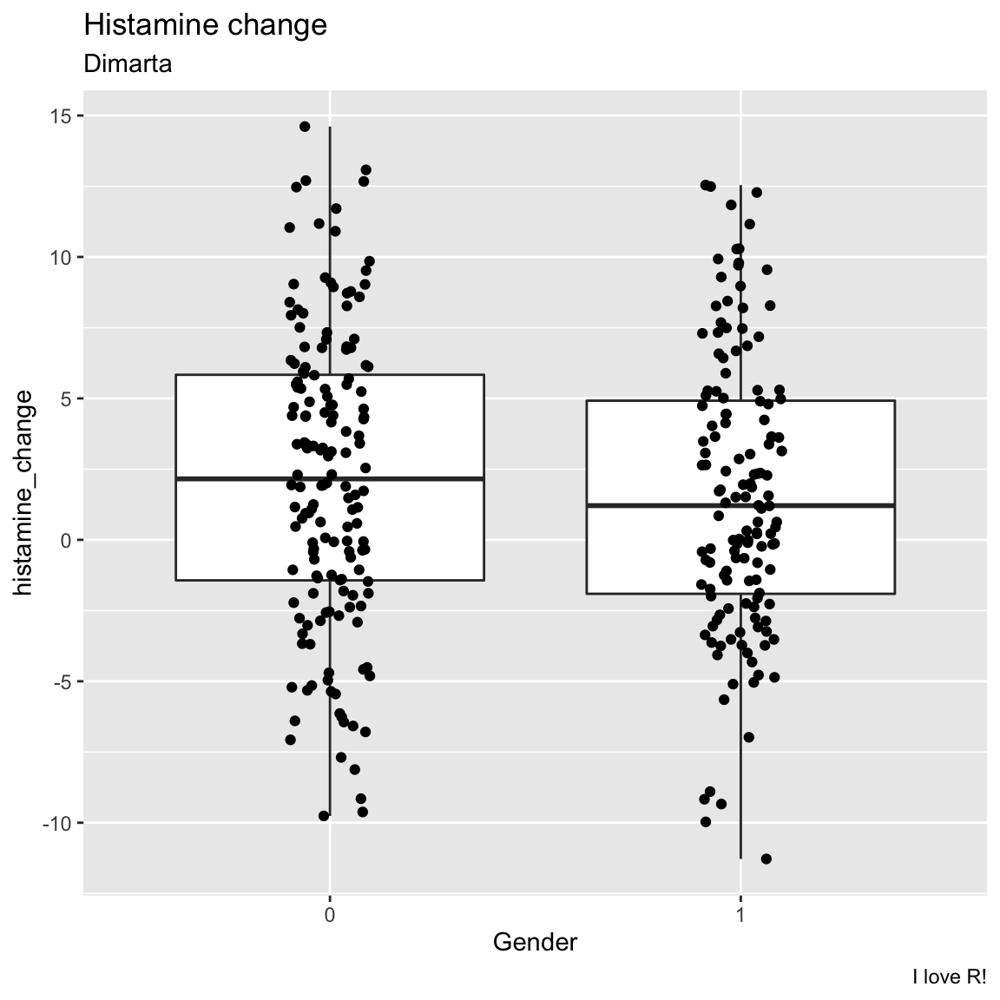
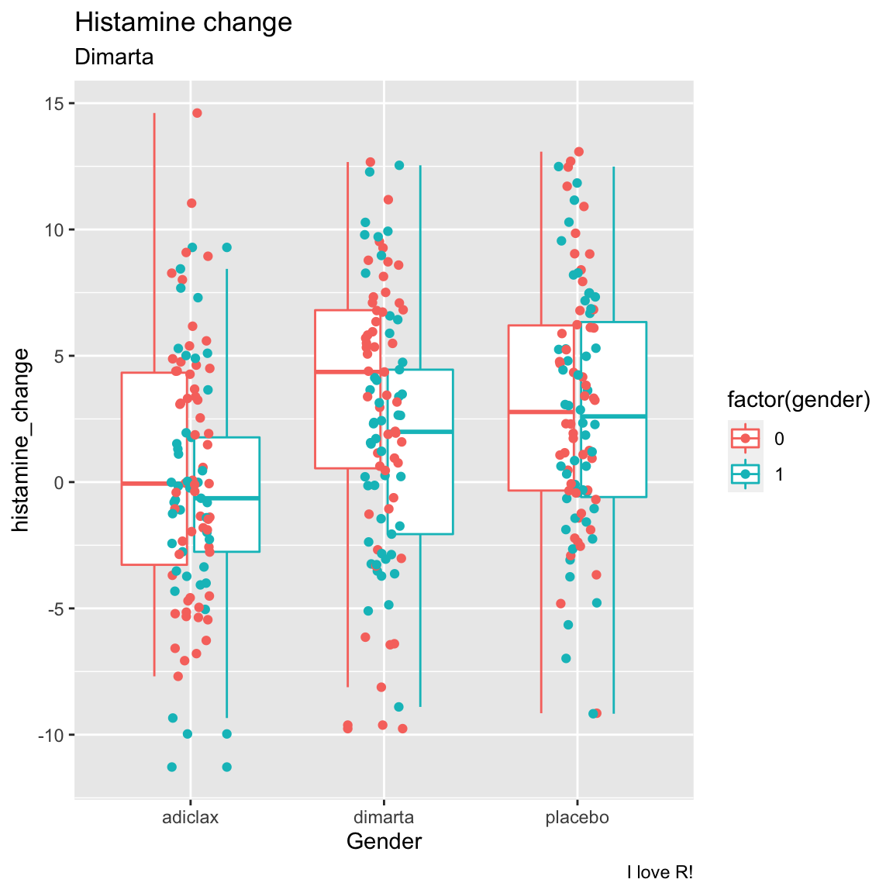
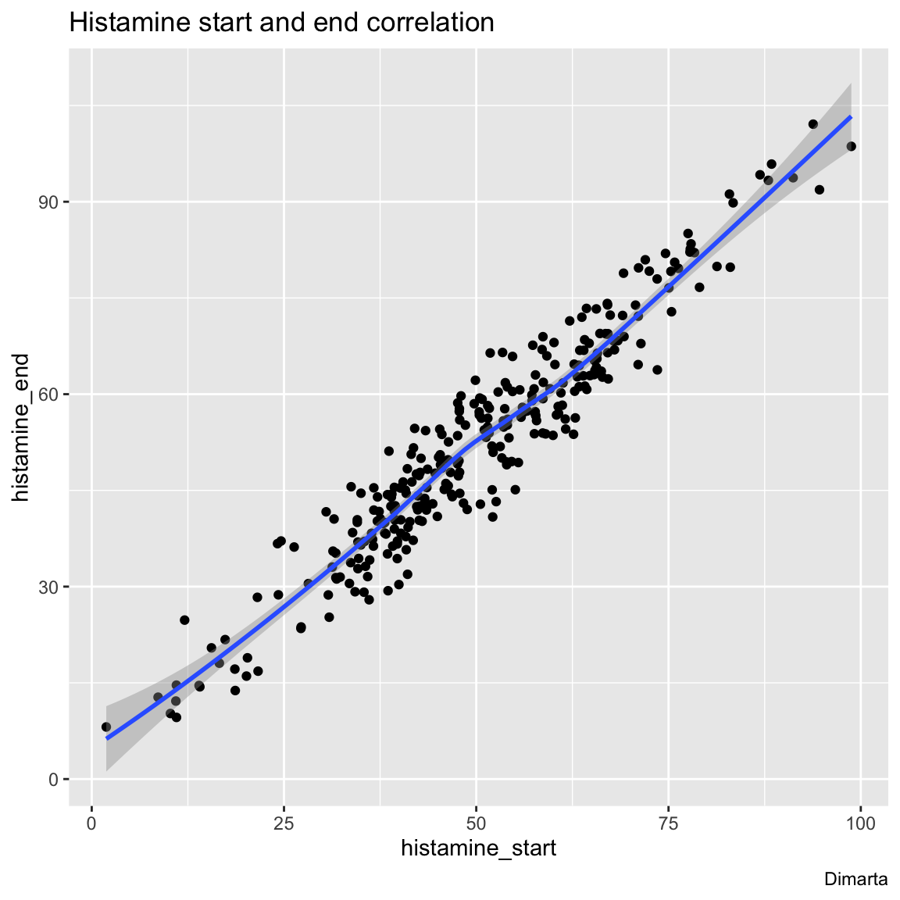
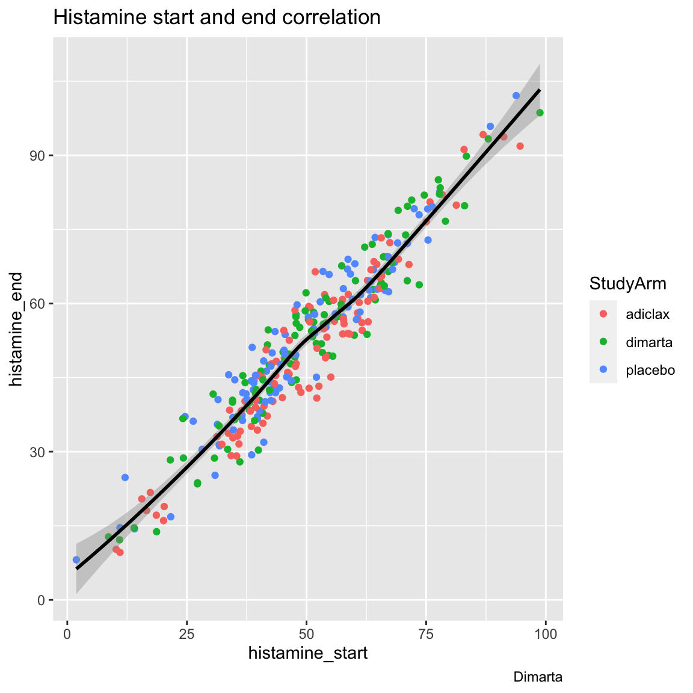
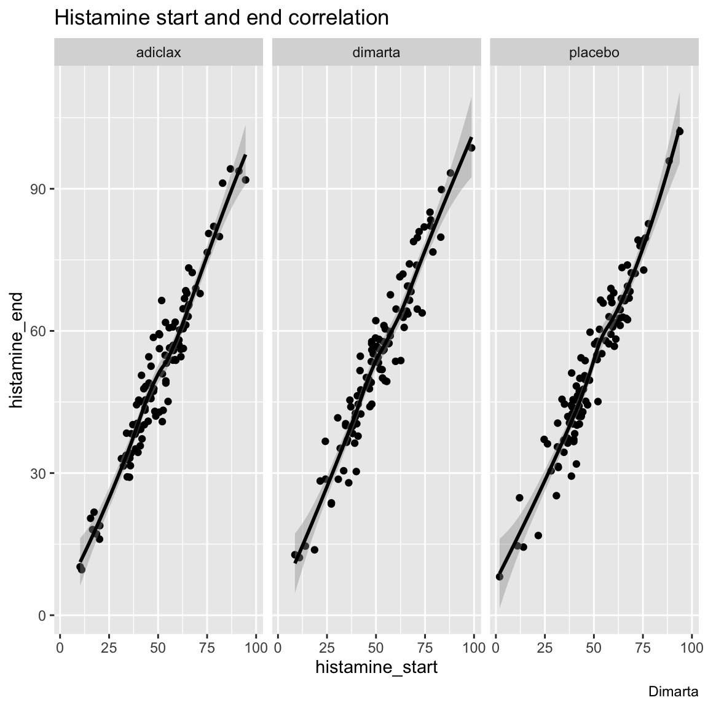

Case study: Clinical
|
Introduction to Data Science with
R The R Bootcamp |

|

adapted from formerfda.com
{kind=link}
Overview
In this case study, we will look at the results of a clinical trial exploring the effectiveness of a new medication called dimarta on reducing histamine in patients with a disease that leads to chronically high histamine levels. In the study, 300 patients were assigned to one of three different treatment arms. One arm was given a placebo. The other arm was given adiclax – the standard of care for the disease. Finally, the third arm was given dimarta. There were two main measures of interest in the trial: patient’s changes in histamine from the beginning to the end of the trial, and their change in quality of life (measured by self report).
In addition to exploring the effects of the three medications, the researchers are interested in the extent to which three different biomarkers, dw, ms, and np, are correlated with therapeutic outcomes. In other words, to patients that express one or more of these biomarkers have better, or worse, outcomes that those that do not express these biomarkers?
Tasks
A - Getting Setup
Open your
TheRBootcampR project. It should already have the folders1_Dataand2_Code.Create and work in an R Markdown document for this case study. Save your markdown file
2_Codeunder the nameclinical_casestudy.Rmd.At the top of the script, load the
tidyversepackage.
B - Data I/O
- Using
read_csv(), load thedimarta_trial.csv,dimarta_demographics.csv, anddimarta_biomarker.csvdatasets as three new objects calledtrial_df,demographics_df, andbiomarker_df.
## read in datasets
trial_df <- read_csv("1_Data/dimarta_trial.csv")
demographics_df <- read_csv("1_Data/dimarta_demographics.csv")
biomarker_df <- read_csv("1_Data/dimarta_biomarker.csv")- Get a first impression of the objects you just created by exploring
them with a mixture of the
View(),head(),names(), andstr()functions. Were they all loaded correctly?
trial_df# A tibble: 300 × 6
PatientID arm histamine…¹ hista…² qol_s…³
<chr> <dbl> <dbl> <dbl> <dbl>
1 txdjezeo 1 58.6 67.0 3
2 htxfjlxk 3 36.1 28.0 3
3 vkdqhyez 1 57.7 57.3 2
4 dbuvrwfq 3 56.6 57.4 2
5 ydaitaah 2 64.7 67.9 5
# … with 295 more rows, and abbreviated
# variable names ¹histamine_start,
# ²histamine_end, ³qol_start
# ℹ Use `print(n = ...)` to see more rowsdemographics_df# A tibble: 300 × 5
PatientID age gender site diseasestatus
<chr> <dbl> <dbl> <chr> <chr>
1 pkyivajv 36 0 Tokyo Mid
2 dbuvrwfq 39 0 Paris Late
3 jhuztppp 30 0 Tokyo Mid
4 qejexgza 34 1 Tokyo Late
5 cszrjxju 41 1 Tokyo Late
# … with 295 more rows
# ℹ Use `print(n = ...)` to see more rowsbiomarker_df# A tibble: 900 × 3
PatientID Biomarker BiomarkerStatus
<chr> <chr> <lgl>
1 ygazqssv dw FALSE
2 qosueuyw ms FALSE
3 bhhykjvw ms FALSE
4 ifajorty np TRUE
5 gxnsybdt ms FALSE
# … with 895 more rows
# ℹ Use `print(n = ...)` to see more rowsC - Data Wrangling
- Change the name of the column
armin thetrial_dfdata toStudyArm.
trial_df <- trial_df %>%
rename(StudyArm = arm)- Using the
table()function, look at the values of theStudyArmcolumn intrial_df. You’ll notice the values are 1, 2, and 3. Usingmutate()andcase_when()change these values to the appropriate names of the study arms (look at the variable descriptions to see which is which!)
# table(trial_df$StudyArm)
trial_df <- trial_df %>%
mutate(StudyArm = case_when(
StudyArm == 1 ~ "placebo",
StudyArm == 2 ~ "adiclax",
StudyArm == 3 ~ "dimarta"
))- In the
demographics_dfdata, you’ll see that gender is coded as 0 and 1. Usingmutate()create a new column indemographics_dfcalledgender_cthat shows gender as a string, where 0 = “male”, and 1 = “female”.
demographics_df <- demographics_df %>%
mutate(gender_c = case_when(
gender == 0 ~ "male",
gender == 1 ~ "female"
))- Now let’s create a new object called
dimarta_dfthat combines data fromtrial_dfanddemographics_df. To do this, useleft_join()to combine thetrial_dfdata with thedemographics_dfdata. This will merge the two datasets so you can have the study results and demographic data in the same dataframe. Make sure to assign the result to a new object calleddimarta_df
# Create a new dataframe called dimarta_df that contains both trial_df and demographics_df
dimarta_df <- trial_df %>%
left_join(demographics_df)- You’ll notice that the biomarker_df dataframe is in the ‘long’
format, where each row is a patient’s biomarker result. Making use of
the
pivot_wider()function, create a new dataframe called biomarker_wide_df where each row is a patient, and the results from different biomarkers are in different columns. When you finish, look at biomarker_wide_df to see how it looks!
biomarker_wide_df <-
biomarker_df %>%
pivot_wider(names_from = 'XX',
values_from = 'XX')biomarker_wide_df <-
biomarker_df %>%
pivot_wider(names_from = 'Biomarker',
values_from = 'BiomarkerStatus')- Now, using the
left_joinfunction, add thebiomarker_wide_dfdata to thedimarta_dfdata! Now you should have all of the data in a single dataframe calleddimarta_df
dimarta_df <- dimarta_df %>%
left_join(biomarker_wide_df)- View
dimarta_dfto make sure the data look correct! The data should have one row for each patient, and 13 separate columns, includingdw,ms, andnp
dimarta_df# A tibble: 300 × 14
PatientID StudyArm histam…¹ hista…² qol_s…³
<chr> <chr> <dbl> <dbl> <dbl>
1 txdjezeo placebo 58.6 67.0 3
2 htxfjlxk dimarta 36.1 28.0 3
3 vkdqhyez placebo 57.7 57.3 2
4 dbuvrwfq dimarta 56.6 57.4 2
5 ydaitaah adiclax 64.7 67.9 5
# … with 295 more rows, and abbreviated
# variable names ¹histamine_start,
# ²histamine_end, ³qol_start
# ℹ Use `print(n = ...)` to see more rows- Using the
mean()function, calculate the mean age of all patients.
mean(dimarta_df$age)[1] 39.9- Create a table showing how many male and female patients were in the trial.
dimarta_df %>%
group_by(XXX) %>%
summarise(
Counts = n()
)dimarta_df %>%
group_by(gender_c) %>%
summarise(
Counts = n()
)# A tibble: 2 × 2
gender_c Counts
<chr> <int>
1 female 140
2 male 160- Now, using similar code, find out how many patients were assigned to each study arm.
dimarta_df %>%
group_by(StudyArm) %>%
summarise(
Counts = n()
)# A tibble: 3 × 2
StudyArm Counts
<chr> <int>
1 adiclax 100
2 dimarta 100
3 placebo 100- Find out how many men and women were assigned to each study arm (Hint: You can use very similar code to what you used above, just add a second grouping variable!)
dimarta_df %>%
group_by(StudyArm, gender_c) %>%
summarise(Counts = n())# A tibble: 6 × 3
# Groups: StudyArm [3]
StudyArm gender_c Counts
<chr> <chr> <int>
1 adiclax female 41
2 adiclax male 59
3 dimarta female 49
4 dimarta male 51
5 placebo female 50
# … with 1 more row
# ℹ Use `print(n = ...)` to see more rows- Add a new column to the
dimarta_dfdata calledhistamine_changethat shows the change in patient’s histamine levels from the start to the end of the trial (Hint: usemutate()and just subtracthistamine_startfromhistamine_end!)
dimarta_df <- dimarta_df %>%
mutate(
histamine_change = histamine_end - histamine_start
)- Add a new column to
dimarta_dfcalledqol_changethat shows the change in patient’s quality of life.
dimarta_df <- dimarta_df %>%
mutate(
qol_change = qol_end - qol_start
)
# Look at result
dimarta_df %>%
select(qol_change)# A tibble: 300 × 1
qol_change
<dbl>
1 0
2 1
3 0
4 1
5 2
# … with 295 more rows
# ℹ Use `print(n = ...)` to see more rows- Calculate the percentage of patients who tested positive for each of
the three biomarkers (Hint: If you calculate the
mean()of a logical vector, you will get the percentage of TRUE values!)
# Calculate percent of patients with positive biomarkers
dimarta_df %>%
summarise(
dw_mean = mean(XXX),
ms_percent = mean(XXX),
np_percent = mean(XXX)
)# Calculate percent of patients with positive biomarkers
dimarta_df %>%
summarise(
dw_mean = mean(dw),
ms_percent = mean(ms),
np_percent = mean(np)
)# A tibble: 1 × 3
dw_mean ms_percent np_percent
<dbl> <dbl> <dbl>
1 0.257 0.19 0.233- Were there different distributions of age in the different trial
sites? To answer this, separately calculate the mean and standard
deviations of patient ages in each site. (Hint: group the data by
site, then calculate two separate summary statistics:age_mean = mean(age), andage_sd = sd(age).
# Calculate the mean change in histamine for each study site
dimarta_df %>%
group_by(site) %>%
summarise(
age_mean = mean(age),
age_sd = sd(age)
)# A tibble: 3 × 3
site age_mean age_sd
<chr> <dbl> <dbl>
1 London 39.9 5.86
2 Paris 39.8 4.84
3 Tokyo 40.1 4.50- Calculate the mean change in histamine results separately for each study site
# Calculate the mean change in histamine for each study site
dimarta_df %>%
group_by(site) %>%
summarise(
histamine_change_mean = mean(histamine_change, na.rm = TRUE)
)# A tibble: 3 × 2
site histamine_change_mean
<chr> <dbl>
1 London 1.99
2 Paris 2.29
3 Tokyo 1.29- Calculate the mean change in histamine results
(
histamine_change) for each study arm. Which study arm had a largest decrease in histamine?
# Calculate the mean change in histamine for each study site
dimarta_df %>%
group_by(StudyArm) %>%
summarise(
histamine_change_mean = mean(histamine_change, na.rm = TRUE)
)# A tibble: 3 × 2
StudyArm histamine_change_mean
<chr> <dbl>
1 adiclax 0.210
2 dimarta 2.51
3 placebo 2.90 - Calculate the mean change in quality of life
(
qol_change) for each study arm. Do the results match what you found with the histamine results?
# Calculate the mean change in histamine for each study site
dimarta_df %>%
group_by(StudyArm) %>%
summarise(
qol_change_mean = mean(qol_change, na.rm = TRUE)
)# A tibble: 3 × 2
StudyArm qol_change_mean
<chr> <dbl>
1 adiclax 0.06
2 dimarta 0.01
3 placebo -0.15D - Plotting
- Create boxplots showing the relationship between study arm and
histamine change. (Tip! convert
StudyArmto a factor with factor(StudyArm))
ggplot(data = dimarta_df,
mapping = aes(x = StudyArm,
y = histamine_change)) +
geom_boxplot() +
labs(title = "Histamine change",
subtitle = "Dimarta",
caption = "I love R!")
- Try using
geom_jitter()to add the raw points to the plot
ggplot(data = dimarta_df,
mapping = aes(x = StudyArm,
y = histamine_change)) +
geom_boxplot() +
geom_jitter(width = .1) +
labs(title = "Histamine change",
subtitle = "Dimarta",
caption = "I love R!")
- Create the same plot as above, but instead of analysing study arm,
try analysing gender. (Tip! convert gender to a factor with
factor(gender)) What do you find? Did one gender have better histamine improvements than the other?
ggplot(data = dimarta_df,
mapping = aes(x = factor(gender),
y = histamine_change)) +
geom_boxplot() +
geom_jitter(width = .1) +
labs(title = "Histamine change",
subtitle = "Dimarta",
caption = "I love R!",
x = "Gender")
- Now create the same plot but show both gender and study arm in the same plot. One way to do this would be to color the points by gender!
ggplot(data = dimarta_df,
mapping = aes(x = StudyArm,
y = histamine_change,
col = factor(gender))) +
geom_boxplot() +
geom_jitter(width = .1) +
labs(title = "Histamine change",
subtitle = "Dimarta",
caption = "I love R!",
x = "Gender")
- Is there a correlation between patient’s starting and ending histamine levels? Create a scatterplot with a regression line to find out!
ggplot(data = dimarta_df,
aes(x = histamine_start,
y = histamine_end)) +
geom_point() +
geom_smooth() +
labs(title = "Histamine start and end correlation",
caption = "Dimarta")
- Now create the same plot as above, but have different colored points for different study arms (but only one regression line).
ggplot(data = dimarta_df,
aes(x = histamine_start,
y = histamine_end,
col = StudyArm)) +
geom_point() +
geom_smooth(col = "black") +
labs(title = "Histamine start and end correlation",
caption = "Dimarta")
- Instead of having different study arms as different colored points,
create another plot using
facet_wrap()to have different study arms in different plotting panels.
ggplot(data = dimarta_df,
aes(x = histamine_start,
y = histamine_end)) +
geom_point() +
geom_smooth(col = "black") +
facet_wrap(~ StudyArm) +
labs(title = "Histamine start and end correlation",
caption = "Dimarta")
Datasets
| File | Rows | Columns | Description |
|---|---|---|---|
| dimarta_trial.csv | 300 | 6 | Key DIMARTA trial outcomes |
| dimarta_biomarker.csv | 900 | 3 | Biomarker status’ for 3 different biomarkers for each patient. |
| dimarta_demographics.csv | 300 | 5 | Demographic information for each patient |
Column Descriptions
dimarta_trial.csv
| Variable | Description |
|---|---|
| PatientID | Unique patient id |
| arm | Treatment arm, either 1 = placebo, 2 = adiclax (the standard of treatment), or 3 = dimarta (the target drug) |
| histamine_start | histamine value at the start of the trial |
| histamine_end | histamine value at the end of the trial |
| qol_start | Patient’s rated quality of life at the start of the trial |
| qol_end | Patient’s rated quality of life at the end of the trial |
dimarta_demographics.csv
| Variable | Description |
|---|---|
| PatientID | Unique patient id |
| age | Patient age |
| gender | Patient gender, 0 = male, 1 = female |
| site | Site where the clinical trial was conducted |
| disease status | Status of the patient’s disease at start of trial |
dimarta_biomarker.csv
| Variable | Description |
|---|---|
| PatientID | Unique patient id |
| Biomarker | One of three biomarkers: dw, ms, and np |
| BiomarkerStatus | Result of the test for the biomarker. |
Functions
Packages
| Package | Installation |
|---|---|
tidyverse |
install.packages("tidyverse") |